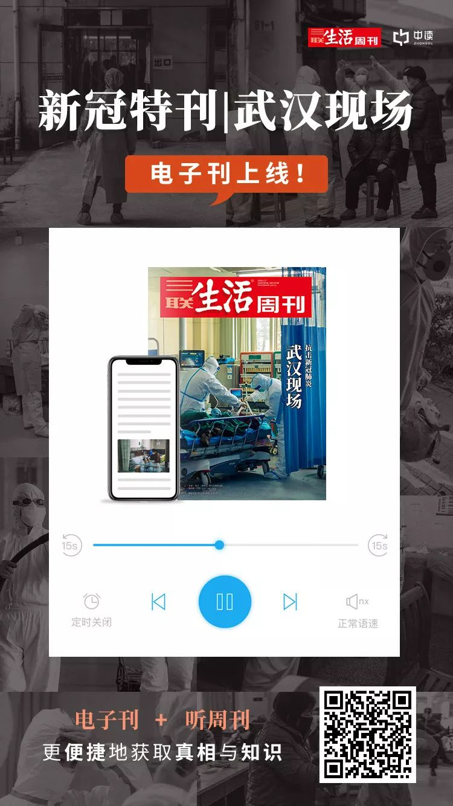

跨省追捕、5天宣判 多地公检法稳准狠打击“口罩诈骗案”
原文链接 备份链接 本报记者 张家振 北京报道 江苏省宜兴市某企业采购员刘缘（化名）通过网络向一名异地供货商采购8万只口罩，不料在足额缴纳货款后，陷入了“财货两空”的境地。 宜兴市公安局经多日缜密侦查，“逆行”千里最终在2月14日将身居 …
文 | 邢海洋
武汉有一位微博博主@八荒以后 的帖子引来了网友们的唏嘘。封城之下，物资一直稳定，没有供应不足，但因为近日小区改变了管理规则，每隔三天才能采购一次，很多人去囤积，她家的储备不足，一时饿了肚子。
博主@八荒以后 的求助帖子很快引来上万次的转发，网友们纷纷献计献策。我们得以了解到疫区百姓的采购方式：那里很多小区每天都组织团购米、面、青菜、肉，甚至还有水果和蛋糕；长江日报公众号里有一个团菜，量有点大，可以找邻居拼；在没有物业的老小区，社区街道的工作人员会有组织送菜的方法；一些社区还有志愿者帮助采买和配送。盒马生鲜可以给附近的居民送货，京东超市可能爆仓了但是可以送货。封城之下物资供应基本充足，买东西偶尔有困难，但是买不到也不可能。

1月28日，北京某超市内，民众带着口罩选购商品
春节期间，当人们第一次意识到要宅在家里，要做好长期宅的准备时，多地曾经冒出菜荒”，酒店饭馆眼看营业无望，将后厨的生鲜菜肴抛售出来，缓解了菜荒。此后食物供应渐趋平稳，美菜、盒马、京东和每日优鲜等生鲜App，乃至邻里菜蔬小店也趁机扩张，送菜上门渐成主流购物方式，销量普遍是平日里的数倍，以至于频频爆仓，不得不调整配送时间。与年前唯一不同的是，即使你网上下了单，菜也不能送到家门口，你得自己到小区门口去取。
本来，春节人手不足，快递按惯例要“慢递”上一阵子。这个春节尤其慢。刚刚同事杨璐还在晒她从东京海购口罩的经历，她1月31日从东京快递出来的口罩，2月17日才转运到北京，没送到家呢。而我自己从唐山购买的些日用品，也是半个月后才送到的。特殊时期，快递慢了下来，要么迟迟不发货，要么迟迟不到货。个别情况下，因为封路的原因还遭遇退单，因为物价变动，商家还会反悔。闲在家里的消费者本来就无聊，于是每天N遍地刷快递信息，主观感受上，快递更“慢”了。本来令国人骄傲的“新四大发明”之一的网购，体验一下子变得不那么好了。憋在斗室之中，网购本可以承担后勤保障和打发时间、分散注意力的功能，可迟迟不到的快递反而加重了人们的心理负担。
快递何其慢？只有个例，没有统计数据，这里不妨从淘宝都不得不改变了发货和收货时间上感受一下：发货时间上，淘宝对卖家的要求改为须在买家付款后48小时内点击发货，并在点击发货后72小时内完成揽收。也就是说从接单到快递揽收，足有5天的时限。收货方面，通过快递、EMS发货的，自“卖家已发货”状态起的20日后，系统会自动确认收货。**这就意味着从买家下单到收货，平台为商品在路上留出了足足22天的时间，比过去多出来一倍。
**

2020年2月14日，北京迎来降雪天气，快递小哥忙着送货。图 | 视觉中国
2月10日起，各大快递公司均宣布了复工，但据G7物联网平台&车满满2月16日数据，全国物流运输状况仍受到疫情较大影响，整车物流流量对比旺季恢复率为22%，作为商贸流通毛细血管的零担物流恢复率则仅为1.1%。为把疫情风险降低到最小，各地对复工有严格的限制，处于产业链中的企业，也因为上下游的联动，互相牵制着难以满负荷运行。物流业是联系各行各业以及消费者的血液循环系统，如果机体丧失了活力，循环系统也难以独立高效率运行。且如果贸然开足马力，就面临着无米之炊的境地。举步维艰的物流业，对于规模化复工多是观望的态度。
去年初曾有一份调查显示，76.31%的快递员来自农村，15.89%的快递员来自县城，仅有7.8%来自城市。我们可以据此推测，有八、九成的快递员并非本地人，而是外来人口。人社部统计的数据显示，我国外出农民工有1.7亿多人，截止到目前，其中大多数的人还没有踏上返程。返回大城市的路途遥遥，严控之下更是步步阻碍。近日有来自政府方面的报道，云南昭通的返乡过节务工人员，居然是在政府工作人员和医务人员护送下，搭乘返岗专车回浙江的工厂上班，可见外来人员返城之难。而快递公司在大城市的神经末梢多是加盟店，规模小，结构松散，哪有可能被政府护送着，组团点对点地返城打工。

2018年8月24日，武汉，饿了么外卖小哥在汉口街头休息。图 | 视觉中国
即使他们踏上了返回大城市的旅程，按照北京和上海等大城市的要求，外来者也需要先自行隔离14天才能够开始工作，这就使得短期内快递业的用工荒根本没办法缓解。
携程创始人、人口学家梁建章就认为，当前社会为了部分过度的隔离政策，正在付出沉重的经济代价。而整个社会不能创造财富，现有的财富并不能支撑很久。到时候，不只快递小哥没了积蓄，企业没了钱，作为消费者的居民，也会“囊中羞涩”。那时候将不是我们为收不到快递而焦虑，而是为买不起网购商品而心慌。
对于广大的市民，让快递进小区，无疑是提高快递效率最现实、也最为力所能及的办法。几乎所有的快递自提箱都建在小区内，若快递能进来，小哥们不用在风中苦苦等待，双方不必接触就能完成交接。而把快递阻挡在小区门外的做法，空耗了快递小哥的人力和时间，使“最后一公里”的投递，难上加难。
作者档案

**邢海洋
**
这个冬天雪好大，感觉自己是雪花中的一片！
26分钟前


三联生活周刊
⊙文章版权归《三联生活周刊》所有，欢迎转发到朋友圈，转载开白请联系后台。未经同意，严禁转载至网站、APP等。

*点击【阅读原文】，获取三联**“**新冠特刊”电子刊（文字版+有声版）*
邢海洋
微信扫一扫赞赏作者 赞赏
长按二维码向我转账
受苹果公司新规定影响，微信 iOS 版的赞赏功能被关闭，可通过二维码转账支持公众号。
原文链接 备份链接 本报记者 张家振 北京报道 江苏省宜兴市某企业采购员刘缘（化名）通过网络向一名异地供货商采购8万只口罩，不料在足额缴纳货款后，陷入了“财货两空”的境地。 宜兴市公安局经多日缜密侦查，“逆行”千里最终在2月14日将身居 …
原文链接 备份链接 快递小哥、理发师、医护人员、患者……身处抗疫一线的每个“小人物”的相遇与重逢，都是一篇生动鲜活的故事。他们既平凡，又伟大，他们是历史长河中的沙砾，我们拾起来，放在阳光下也闪闪发光。 记者 | 吴 雪 一个普通工作日的 …
原文链接 备份链接 要是说有什么神奇的地方，就是封城二十天后，大家还没有失去幽默感。印象里，幽默应该第一批在疫区消失的情绪。愤怒和绝望的风暴后，幽默顽强地翻过身，重新站在平起平坐的地位。闷在家中催生的段子，塑料袋和水瓶拼凑的出行防护，地方 …
原文链接 备份链接 《第一财经》YiMagazine告读者 _ _ _ 因疫情持续，杂志在印刷和物流配送等环节受到很大影响，2月刊肯定已经无法按时出版。 《第一财经》YiMagazine编辑部因此决定将2020年2月刊、3月刊合并出版。合 …
原文链接 备份链接 _ 在新冠肺炎疫情中心区域，远比平时忙碌的快递员在街头难见其他人，遇到别家公司的快递员，大家叫不上名字，但都打个招呼，在特殊的时点里惺惺相惜 _ 文 |《财经》记者 俞琴 编辑 | 鲁伟 新冠肺炎疫情在武汉蔓延后，整座 …